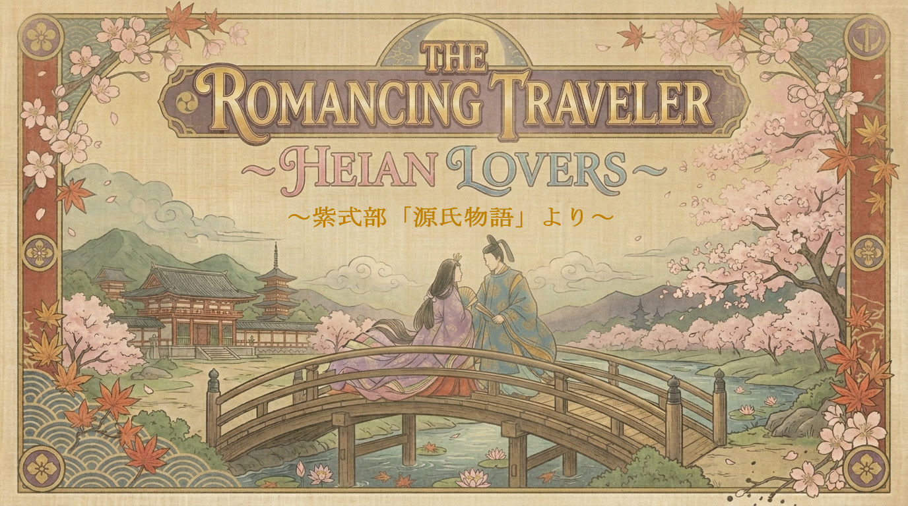

GAMEBOOK powered by STORYEM
The Romancing Traveler
- Heian Lovers -
Inspired by Murasaki Shikibu's 'The Tale of Genji'
夢の旅路 平安の恋人たち ～紫式部「源氏物語」より～
第一部：青年編（光源氏の栄華）
The Romancing Traveler: Part 1
1
桐壺
The Garden of Life
2
帚木
The Heat Shimmer
3
空蝉
Feeling of Emptiness
4
夕顔
Bottle Gourd
5
若紫
Lavender
6
末摘花
The Red-Nosed
7
紅葉賀
Sin and Blessing
8
花宴
The Eye-Catching Flower
9
葵
Possession
10
賢木
Sacred Leaves
11
花散里
Flowers Falling
12
須磨
Hiding in Suma
13
明石
Evacuation to Akashi
14
澪標
Self-destructive passion
15
蓬生
Wilted-Nose
16
関屋
A Point in Fate
17
絵合
The Story competition
18
松風
The Wind While Waiting
19
薄雲
Mother's Shadow
20
朝顔
The Dreaming Flower
21
乙女
The Traditional Performance
22
玉鬘
The Destiny
23
初音
Long Separation
24
胡蝶
Butterfly Dream
25
蛍
Burning Heart
26
常夏
The Pink Flower
27
篝火
Illuminated
28
野分
An Appearance
29
行幸
The Identity
30
藤袴
Thoroughwort Flowers
31
真木柱
The Cypress Pillar
32
梅枝
True Charm
33
藤裏葉
Wisteria Leaves
第二部：壮年編（因果の苦悩）
The Romancing Traveler: Part 2
34-1
若菜 上
Spring Shoots I
34-2
若菜 下
Spring Shoots II
35
柏木
The Guardian
36
横笛
The Flute of Circle
37
鈴虫
The Pine Beetle
38
夕霧
Second Generation
39
御法
The Final Rite
40
幻
Free Wings
41
雲隠
Vanished
第三部：後日編（匂宮三帖 ＋ 宇治十帖）
The Romancing Traveler: Part 3
42
匂宮
The Perfumed
43
紅梅
The Secret Love
44
竹河
Bamboo River
45
橋姫
Noble Princess
46
椎本
Days of Glory
47
総角
Agemaki (Trefoil Knots)
48
早蕨
At the Spring Ferns
49
宿木
Resemblance
50
東屋
The Eastern Cottage
51
浮舟
A Drifting Boat
52
陽炎
The Mayfly
53
手習
Writing Practice
54
夢浮橋
Fade into a Dream